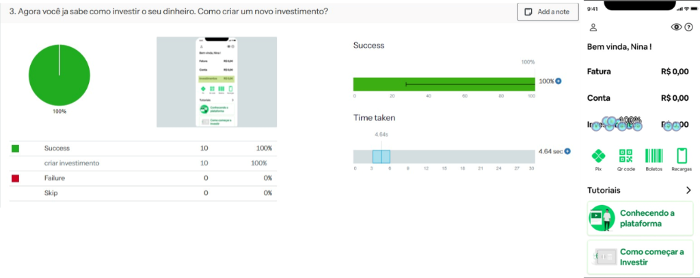
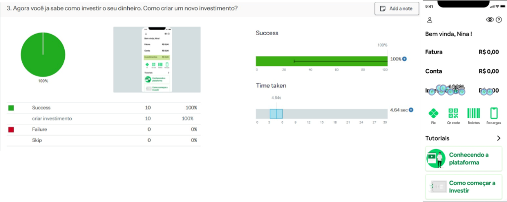

Design Thinking - First Click
Após concluir as etapas de inspiração, ideação e desenvolvimento dos protótipos, foi realizada a avaliação da interação no sistema B.O.G. O método escolhido para essa análise foi o First-click, um teste de usabilidade baseado em observação, no qual usuários reais interagem com o sistema, permitindo que os avaliadores coletem dados e analisem os resultados para identificar possíveis melhorias na interface. No First-click, os usuários recebem tarefas claramente definidas e uma interface correspondente (tela). A partir disso, eles devem clicar no ponto da tela onde acreditam que a tarefa será realizada. Os resultados são classificados como acertos ou erros no primeiro clique. Os erros indicam que a realização da tarefa não é tão intuitiva quanto deveria, apontando oportunidades para aprimorar a interface. A avaliação contou com a participação de 10 usuários, cada um realizando 6 tarefas específicas com 6 telas associadas às decisões de onde clicar. Para a execução do teste, foi utilizada a ferramenta Chalkmark, da Optimal Workshop, que possibilita configurar estudos completos, incluindo questionários, além de apresentar os resultados por meio de gráficos. Você pode ser mais um dentro do nosso teste de First-click clicando neste link. Abaixo, são apresentados os principais resultados obtidos.

 
